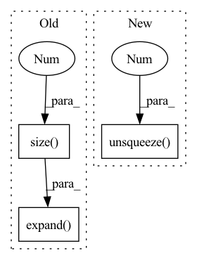

Pattern ID :3558
Before Change
return embedding
def forward(self, embedding, speed, command):
batch_size = embedding.size(0 )
if self._input_speed:
embedding += self._speed_in(speed)
control_pred = 0.
for i, branch in enumerate(self._branches):
// Choose control for branch of only active command
// We check for (command - 1) since navigational command 0 is ignored
control_pred += branch(embedding) * (i == (command - 1)).expand( batch_size, 3)
if self.predict_speed:
speed_pred = self._speed_out(embedding)
return control_pred, speed_predAfter Change
for i, branch in enumerate(self._branches):
// Choose control for branch of only active command
// We check for (command - 1) since navigational command 0 is ignored
control_pred += branch(embedding) * (i == (command.unsqueeze(1 ) - 1))
if self.predict_speed:
speed_pred = self._speed_out(embedding)In pattern: SUPERPATTERN
Frequency: 3
Non-data size: 3
Instances Fragment ID: 17643708
Project Name: opendilab/di-drive
Commit Name: 7d846cbfe584e0ef3b1af1632d3089f6c1a7b7ed
Time: 2021-10-18
Author: chenruobing@sensetime.com
File Name: core/models/cilrs_model.py
M Class Name: CILRSModel
N Class Name: CILRSModel
M Method Name: forward(4)
N Method Name: forward(4)
M Parent Class: nn.Module
N Parent Class: nn.Module
M File Name: core/models/cilrs_model.py
N File Name: core/models/cilrs_model.py
M Start Line: 92
M End Line: 101
N Start Line: 93
N End Line: 99
Before Change
g_t = torch.softmax(g_t, dim=-1) / sig_t + self.eps
// each B x K x T_in
g_t = g_t.unsqueeze(2).expand( g_t.size(0),
g_t.size(1),
inputs.size(1 ) )
sig_t = sig_t.unsqueeze(2).expand_as(g_t)
mu_t_ = mu_t.unsqueeze(2).expand_as(g_t)
j = self.J[:g_t.size(0), :, :inputs.size(1)]
After Change
j = self.J[:inputs.size(1)]
// attention weights
phi_t = g_t.unsqueeze(-1) * torch.exp(-0.5 * (mu_t.unsqueeze(-1) - j)**2 / (sig_t.unsqueeze(-1 ) **2))
alpha_t = self.COEF * torch.sum(phi_t, 1)
// apply masking Fragment ID: 17643711
Project Name: coqui-ai/tts
Commit Name: 0e8881114b7cd223a41a452ea7cf570b56c109a7
Time: 2020-01-10
Author: root@sp-mlc3-5423-0.mlc
File Name: layers/common_layers.py
M Class Name: GravesAttention
N Class Name: GravesAttention
M Method Name: forward(5)
N Method Name: forward(5)
M Parent Class: nn.Module
N Parent Class: nn.Module
M File Name: layers/common_layers.py
N File Name: layers/common_layers.py
M Start Line: 162
M End Line: 176
N Start Line: 346
N End Line: 355
Before Change
g_t = torch.softmax(g_t, dim=-1) / sig_t + self.eps
// each B x K x T_in
g_t = g_t.unsqueeze(2).expand(g_t.size(0 ) ,
g_t.size(1),
inputs.size(1))
sig_t = sig_t.unsqueeze(2).expand_as(g_t)
mu_t_ = mu_t.unsqueeze(2).expand_as(g_t)
j = self.J[:g_t.size(0), :, :inputs.size(1)]
After Change
j = self.J[:inputs.size(1)+1]
// attention weights
phi_t = g_t.unsqueeze(-1) * torch.exp(-0.5 * (mu_t.unsqueeze(-1) - j)**2 / (sig_t.unsqueeze(-1 ) **2))
// discritize attention weights
alpha_t = self.COEF * torch.sum(phi_t, 1) Fragment ID: 17643707
Project Name: coqui-ai/tts
Commit Name: 5e148038be5971f2c7c811d46a1d7b28c759ecda
Time: 2020-01-09
Author: root@sp-mlc3-5423-0.mlc
File Name: layers/common_layers.py
M Class Name: GravesAttention
N Class Name: GravesAttention
M Method Name: forward(5)
N Method Name: forward(5)
M Parent Class: nn.Module
N Parent Class: nn.Module
M File Name: layers/common_layers.py
N File Name: layers/common_layers.py
M Start Line: 162
M End Line: 176
N Start Line: 162
N End Line: 174